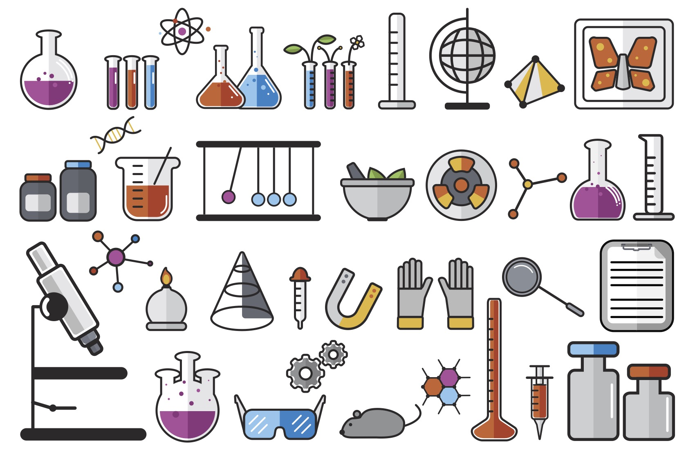
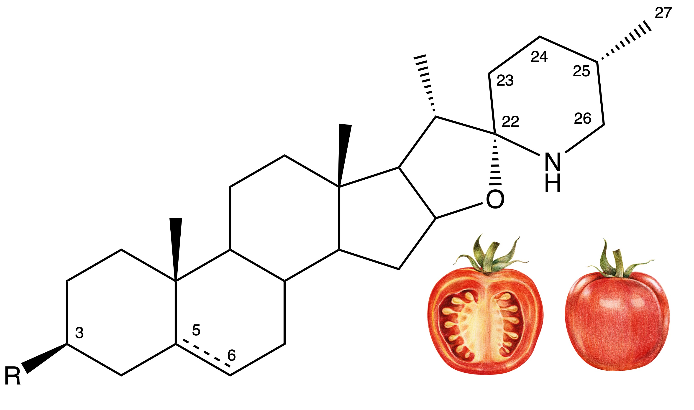

Research
Here you can read about some of the different research focus areas, and approaches we use in our work. The best place to find a comprehensive list of our papers is on Google Scholar, and you can find full text versions of each paper here. Papers are sorted in reverse chronological order, Cooperstone lab members are bolded and Jess is bolded and italicized.
Phytochemical analysis
Developing analytical approaches that allow accurate quantitative analysis of phytochemicals

In order to understand what phytochemicals are doing within a system, robust and quantitative methods are required for their analysis. We focus on developing liquid chromatography and mass spectrometry based methods to allow analysis of phytochemicals and their metabolites, often present at picomolar concentrations. Some papers here are also included which use our methods.
Here is some work we’ve published on the topic though a comprehensive list of all publications can be found on Jess’s Google scholar page. Papers are sorted in reverse chronological order, Cooperstone lab members are bolded and Jess is bolded and italicized.
Click the arrow to see a list of papers on phytochemicals and their analysis
Sholola MJ, Goggans ML, Dzakovich MP, Francis DM, Jacobi SK, Cooperstone JL. Discovery of steroidal alkaloid metabolites and their accumulation in pigs after short-term tomato consumption. Food Chem, 2025:463(3);141346 https://doi.org/10.1016/j.foodchem.2024.141346
- Also published as a preprint on bioRxiv
Pinho L, Lima PM, Fang F, Cooperstone JL, Favaro-Trindade CS, Campanella OH. Effect of extrusion process conditions on extrudates enriched with carotenoids encapsulated by different methods. Int J of Biol Macromol, 2024;267:131200. https://doi.org/10.1016/j.ijbiomac.2024.131200
Thomas M, Puglisi M, Malysheva O, Caudill M, Sholola MJ, Cooperstone JL, Fernandez ML. Eggs improve plasma biomarkers in patients with metabolic syndrome following a plant-based diet. Nutrients, 2022;5:2138. https://doi.org/10.3390/nu14102138
Fenstemaker S, Sim L, Cooperstone JL, Francis DM. Solanum galapagense-derived purple tomato fruit color is conferred by novel alleles of the Anthocyanin fruit and atroviolacium loci. Plant Direct, 2022;6(4):e394. https://doi.org/10.1002/pld3.394
- Also published as a preprint on bioRxiv
Thomas MS, DiBella M, Blesso CN, Malisheva O, Caudill M, Sholola MJ, Cooperstone JL, Fernandez ML. Comparison between egg intake vs choline supplementation on gut microbiota and plasma carotenoids in subjects with metabolic syndrome. Nutrients, 2022;14(6):1179. https://doi.org/10.3390/nu14061179
Dzakovich MP, Francis DM, Cooperstone JL. Biosynthesis of steroidal alkaloids are coordinately regulated and differ among tomatoes in the red-fruited clade. Plant Genome, 2022;e20192. https://doi.org/10.1002/tpg2.20192
- Also published as a preprint on bioRxiv https://doi.org/10.1101/2021.01.06.425594
Pinho LS, Palazzoli da Silva M, Thomazini M, Cooperstone JL, Campanella OH, da Costa Rodrigues CE, Favaro-Trindade CS. Characterization of the composition, carotenoids, and antioxidant activity of guarana (Paullinia cupana) peel. J Food Process Preservation, 2021;45(10): e15854. https://doi.org/10.1111/jfpp.1585
Fenstemaker S, Miller J, Cooperstone JL, Francis DM. Estimating parental contributions to hybrid rootstocks in grafted tomato. Acta Horticulturae, 2021;1302:241-250. https://doi.org/10.17660/ActaHortic.2021.1302.32
Orchard CJ, Cooperstone JL, Gas-Pascual E, Andrade MC, Abud G, Schwartz SJ, Francis DM. Rapid assessment through background genome selection identifies alleles in the promoter of the chromoplast-specific Cyc-B gene that modules levels of beta-carotene in ripe tomato fruit. The Plant Genome, 2021;e20085. https://doi.org/10.1002/tpg2.20085
Anderson K, Ryan N, Pero T, Siddiqui A, Volpedo G, Cooperstone JL, Oghumu S. Black raspberries and protocatechuic acid mitigate DNFB-induced contact hypersensitivity by down-regulating dendritic cell activation and inhibiting mediators of effector responses. Nutrients, 2020;12(6):1701. https://doi.org/10.3390/nu12061701
Dzakovich MP, Hartman JL, Cooperstone JL. A high-throughput extraction and analysis method for steroidal glycoalkaloids in tomato. Front Plant Sci, 2020;11:767. https://doi.org/10.3389/fpls.2020.00767
- Also published a preprint on bioRxiv
Shetge SA, Dzakovich MP, Cooperstone JL, Kleinmeier D, Redan BW. Concentrations of the opium alkaloids morphine, codeine, and thebaine in poppy seeds are reduced after thermal and washing treatments but are not affected when incorporated in a model baked product. J Agric Food Chem, 2020;68(18):5241-5248. https://doi.org/10.1021/acs.jafc.0c01681
Dzakovich MP, Gas-Pascual E, Orchard CJ, Sari EN, Riedl KM, Schwartz SJ, Francis DM, Cooperstone JL. Analysis of tomato carotenoids: comparison extraction and chromatographic methods. J AOAC Int. 2019;102(4):1069-1079. https://doi.org/10.5740/jaoacint.19-0017
Cooperstone JL, Novotny JA, Riedl KM, Cichon MJ, Francis DM, Curley Jr. RW, Schwartz SJ, Harrison EH. Limited appearance of apocarotenoids is observed in plasma after consumption of tomato juices, a randomized human clinical trial. Am J Clin Nutr. 2018;108:1-8. https://doi.org/10.1093/ajcn/nqy177
Westphal A, Riedl KM, Cooperstone JL, Kamat S, VM Balasubramaniam, Schwartz SJ, Böhm, V. High pressure processing of broccoli sprouts – influence on bioactivation of glucosinolates to isothiocyanates. J Agric Food Chem, 2017;65:8578-8585. https://doi.org/10.1021/acs.jafc.7b01380
Cooperstone JL, Tober KA, Riedl KM, Teegarden MD, Cichon MJ, Francis DM, Schwartz SJ, Oberyszyn TA. Tomatoes protect against development of UV-induced keratinocyte carcinoma via metabolomic alterations. Sci Reports, 2017;5:5106. https://doi.org/10.1038/s41598-017-05568-7
Teegarden MD, Harper AR, Cooperstone JL, Tober KA, Schwartz SJ, Oberyszyn TA. 25-Hydroxyvitamin D3 and it’s C-3 epimer are elevated in the skin and serum of Skh-1 mice supplemented with dietary vitamin D3. Mol Nutr Food Res, 2017;61:1700293. https://doi.org/10.1002/mnfr.201700293
Cooperstone JL, Goetz HJ, Riedl KM, Harrison EH, Schwartz SJ, Kopec RE. Relative contribution of -carotene to postprandial vitamin A concentrations in healthy humans after carrot consumption. Am J Clin Nutr, 2017;106:59-66. https://doi.org/10.3945/ajcn.116.150821
Tan H-L, Thomas-Ahner JM, Moran NE, Cooperstone JL, Erdman Jr. JW, Young GS, Clinton SK. Β-carotene 9’,10’ oxygenase modulates the anticancer activity of dietary tomato or lycopene on prostate carcinogenesis in the TRAMP model. Cancer Prev Res, 2017;10(2):161-169. https://doi.org/10.1158/1940-6207.CAPR-15-0402
Yan B, Martinez-Monteagudo SI, Cooperstone JL, Riedl KM, Schwartz SJ, Balasubramaniam VM. Impact of thermal and pressure-based technologies on carotenoid retention and quality parameters in tomato juice. Food Bioprocess Tech, 2017;10(5):808-818. https://doi.org/10.1007/s11947-016-1859-y
Phinney DM, Frelka JC, Cooperstone JL, Schwartz SJ, Heldman DR. Effect of solvent addition sequence on lycopene extraction efficiency from membrane neutralized caustic peeled tomato waste. Food Chem, 2017:215;354-361. https://doi.org/10.1016/j.foodchem.2016.07.178
Aschoff JK, Riedl KM, Cooperstone JL, Hogel J, Bosy-Westphal A, Schwartz SJ, Carle R, Schweiggert RM. Urinary excretion of Citrus flavanones and their major catabolites after consumption of fresh oranges and pasteurized orange juice – a randomized cross-over study. Mol Nutr Food Res, 2016;60:2602-2610. https://doi.org/10.1002/mnfr.201600315
Goetz HJ, Kopec RE, Riedl KM, Cooperstone JL, Narayanasamy S, Curley Jr., RW, Schwartz SJ. An HPLC-MS/MS method for the separation of α-retinyl esters from retinyl esters. J Chrom B, 2016;1029:68-71. https://doi.org/10.1016/j.jchromb.2016.06.043
Cooperstone JL, Francis DM, Schwartz SJ. Thermal processing differentially affects lycopene and other carotenoids in cis-lycopene containing, tangerine tomatoes. Food Chem 2016;210:466-472. https://doi.org/10.1016/j.foodchem.2016.04.078
Cooperstone JL, Ralston RA, Riedl KM, Haufe TC, Schweiggert RM, King SA, Timmers CD, Francis DM, Lesinski GB, Clinton SK, Schwartz SJ. Enhanced bioavailability of lycopene when consumed as cis-isomers from tangerine compared to red tomato juice, a randomized, cross-over clinical trial. Mol Nutr Food Res. 2015;59:658-669. https://doi.org/10.1002/mnfr.201400658
Arango D, Diosa-Toro M, Rojas-Hernandez LS, Cooperstone JL, Schwartz SJ, Jiang J, Schmittgen TD, Mo X, Doseff AI. Dietary apigenin reduces LPS-induced expression of miR-155 restoring immune balance during inflammation. Mol Nutr Food Res. 2015:59:763-772. https://doi.org/10.1002/mnfr.201400705
Kopec RE, Cooperstone JL, Schweiggert RM, Young GS, Harrison EH, Francis DM, Clinton SK, Schwartz SJ. Avocado consumption enhances human postprandial provitamin A absorption and conversion from a novel high-beta-carotene tomato sauce and from carrots. J Nutr. 2014;144:1158–66. https://doi.org/10.3945/jn.113.187674
Pumilia G, Cichon MJ, Cooperstone JL, Giuffrida D, Dugo G, Schwartz SJ. Changes in chlorophylls, chlorophyll degradation products and lutein in pistachio kernels (Pistachia vera L.) during roasting. Food Res Int, 2014;65B:193-198. https://doi.org/10.1016/j.foodres.2014.05.047
Metabolomics
Using untargeted metabolomics in application to plants, foods, cells, and in mammalian systems

Metabolomics allows the comprehensive profiling of hundreds to thousands of small molecules present within a system. By using this approach, we can understand how metabolic changes (in plants, cells, animals, or people) are affected by our research question, and generate new ideas we may not be able to a priori hypothesize.
Here is some work we’ve published on the topic though a comprehensive list of all publications can be found on Jess’s Google scholar page. Papers are sorted in reverse chronological order, Cooperstone lab members are bolded and Jess is bolded and italicized.
Click the arrow to see a list of papers on metabolomics
Roman-Reyna V, Heiden N, Butchacas J, Toth H, Cooperstone JL, Jacobs J. The timing of bacterial mesophyll infection shapes the leaf chemical landscape. Microbiology Spectrum, 2024: 2024:12;4:e04138-23. https://doi.org/10.1128/spectrum.04138-23
Pastuña JV, Quiroz-Moreno CD, Medina EJ, Cooperstone JL, Radice M, Peñuela-Mora MC, Almeida JR, Salazar Mogollon NG. Metabolite fingerprinting of Urospatha sagittifolia (Araceae) tubers at different growth stages by multi-platform metabolomics and molecular networking. Microchemical J, 2024;199:110058. https://doi.org/10.1016/j.microc.2024.110058
Dzakovich MP, Goggans ML, Thomas-Ahner JM, Moran NE, Clinton SK, Francis DM, Cooperstone JL. Transcriptomics and metabolomics reveal tomato consumption alters hepatic xenobiotic metabolism and induces steroidal alkaloid metabolite accumulation in mice. Mol Nutr Food Res, 2024;68:2300239. https://doi.org/10.1002/mnfr.202300239
- Also published as a pre-print on bioRxiv
Emanuel I, Cooperstone JL, Hand-Peduto F. UHPLC-MS/MS identification of metabolites in winterberry fruit putatively associated with natural disease resistance to Diaporthe ilicicola. Phytopathology, 2024;114:93-101. https://doi.org/10.1094/PHYTO-04-23-0130-R
Emanuel I, Cooperstone JL, Hand-Peduto F. Susceptibility screening of winterberry (Ilex verticillata) cultivars against latent fruit rot, and identification of metabolites correlated with rot-resistant phenotypes. J Environ Hortic, 2023;41:121-132. https://doi.org/10.24266/0738-2898-41.3.121
Bilbrey EA, Williamson K, Hatzakis E, Doud Miller D, Fresnedo Ramírez J, Cooperstone JL. Integrating genomics and multi-platform metabolomics enables metabolite QTL detection in breeding-relevant apple germplasm. New Phytologist, 2021;232(5):1944-1958. https://doi.org/10.1111/nph.17693
- Also published as a preprint on bioRxiv
Knobloch TJ, Ryan NM, Bruschweiler-Li L, Wang C, Bernier MC, Somogyi A, Yan PS, Cooperstone JL, Mo X, Bruschweiler RP, Weghorst CM, Oghumu S. Metabolic regulation of glycolysis and AMP activated protein kinase pathways during black raspberry-mediated oral cancer chemoprevention. Metabolites 2019;9(7):140. https://doi.org/10.3390/metabo9070140
Teegarden MD, Schwartz SJ, Cooperstone JL. Profiling the impact of thermal processing on black raspberry phytochemicals using untargeted metabolomics. Food Chem, 2019;274:782-788. https://doi.org/10.1016/j.foodchem.2018.09.053
Teegarden MD, Knobloch TJ, Weghorst CM, Cooperstone JL, Peterson DG. Storage conditions modulate the metabolomic profile of a black raspberry nectar beverage with minimal impact on bioactivity. Food and Function, 2018;9:4593-4601. https://doi.org/10.1039/C8FO00639C
Cooperstone JL, Tober KA, Riedl KM, Teegarden MD, Cichon MJ, Francis DM, Schwartz SJ, Oberyszyn TA. Tomatoes protect against development of UV-induced keratinocyte carcinoma via metabolomic alterations. Sci Reports, 2017;5:5106. https://doi.org/10.1038/s41598-017-05568-7
Nutrition interventions with fruits and vegetables
Administering fruits, vegetables, and their components in cells, and to animals and people

To determine the in vivo health impacts of fruits and vegetables and their constituent phytochemicals, we conduct studies in cells, animals and humans. We look to understand absorption, metabolism, distribution, excretion, and effect on development of disease.
Click the arrow to see a list of papers on our nutritional studies
Cell studies
Anderson K, Ryan N, Pero T, Siddiqui A, Volpedo G, Cooperstone JL, Oghumu S. Black raspberries and protocatechuic acid mitigate DNFB-induced contact hypersensitivity by down-regulating dendritic cell activation and inhibiting mediators of effector responses. Nutrients, 2020;12(6):1701. https://doi.org/10.3390/nu12061701
Arango D, Diosa-Toro M, Rojas-Hernandez LS, Cooperstone JL, Schwartz SJ, Jiang J, Schmittgen TD, Mo X, Doseff AI. Dietary apigenin reduces LPS-induced expression of miR-155 restoring immune balance during inflammation. Mol Nutr Food Res. 2015:59:763-772. https://doi.org/10.1002/mnfr.201400705
Animal studies
Sholola MJ, Goggans ML, Dzakovich MP, Francis DM, Jacobi SK, Cooperstone JL. Discovery of steroidal alkaloid metabolites and their accumulation in pigs after short-term tomato consumption. bioRxiv, February 8, 2024. https://doi.org/10.1101/2024.02.05.579005
Dzakovich MP, Goggans ML, Thomas-Ahner JM, Moran NE, Clinton SK, Francis DM, Cooperstone JL. Transcriptomics and metabolomics reveal tomato consumption alters hepatic xenobiotic metabolism and induces steroidal alkaloid metabolite accumulation in mice. Mol Nutr Food Res, 2024;68:2300239. https://doi.org/10.1002/mnfr.202300239
- Also published as a pre-print on bioRxiv
Knobloch TJ, Ryan NM, Bruschweiler-Li L, Wang C, Bernier MC, Somogyi A, Yan PS, Cooperstone JL, Mo X, Bruschweiler RP, Weghorst CM, Oghumu S. Metabolic regulation of glycolysis and AMP activated protein kinase pathways during black raspberry-mediated oral cancer chemoprevention. Metabolites 2019;9(7):140. https://doi.org/10.3390/metabo9070140
Teegarden MD, Knobloch TJ, Weghorst CM, Cooperstone JL, Peterson DG. Storage conditions modulate the metabolomic profile of a black raspberry nectar beverage with minimal impact on bioactivity. Food and Function, 2018;9:4593-4601. https://doi.org/10.1039/C8FO00639C
Cooperstone JL, Tober KA, Riedl KM, Teegarden MD, Cichon MJ, Francis DM, Schwartz SJ, Oberyszyn TA. Tomatoes protect against development of UV-induced keratinocyte carcinoma via metabolomic alterations. Sci Reports, 2017;5:5106. https://doi.org/10.1038/s41598-017-05568-7
Tan H-L, Thomas-Ahner JM, Moran NE, Cooperstone JL, Erdman Jr. JW, Young GS, Clinton SK. Β-carotene 9’,10’ oxygenase modulates the anticancer activity of dietary tomato or lycopene on prostate carcinogenesis in the TRAMP model. Cancer Prev Res, 2017;10(2):161-169. https://doi.org/10.1158/1940-6207.CAPR-15-0402
Arango D, Diosa-Toro M, Rojas-Hernandez LS, Cooperstone JL, Schwartz SJ, Jiang J, Schmittgen TD, Mo X, Doseff AI. Dietary apigenin reduces LPS-induced expression of miR-155 restoring immune balance during inflammation. Mol Nutr Food Res. 2015:59:763-772. https://doi.org/10.1002/mnfr.201400705
Human studies
Thomas M, Puglisi M, Malysheva O, Caudill M, Sholola MJ, Cooperstone JL, Fernandez ML. Eggs improve plasma biomarkers in patients with metabolic syndrome following a plant-based diet. Nutrients, 2022;5:2138. https://doi.org/10.3390/nu14102138
Thomas MS, DiBella M, Blesso CN, Malisheva O, Caudill M, Sholola MJ, Cooperstone JL, Fernandez ML. Comparison between egg intake vs choline supplementation on gut microbiota and plasma carotenoids in subjects with metabolic syndrome. Nutrients, 2022;14(6):1179. https://doi.org/10.3390/nu14061179
Cooperstone JL, Novotny JA, Riedl KM, Cichon MJ, Francis DM, Curley Jr. RW, Schwartz SJ, Harrison EH. Limited appearance of apocarotenoids is observed in plasma after consumption of tomato juices, a randomized human clinical trial. Am J Clin Nutr. 2018;108:1-8. https://doi.org/10.1093/ajcn/nqy177
Teegarden MD, Harper AR, Cooperstone JL, Tober KA, Schwartz SJ, Oberyszyn TA. 25-Hydroxyvitamin D3 and it’s C-3 epimer are elevated in the skin and serum of Skh-1 mice supplemented with dietary vitamin D3. Mol Nutr Food Res, 2017;61:1700293. https://doi.org/10.1002/mnfr.201700293
Cooperstone JL, Goetz HJ, Riedl KM, Harrison EH, Schwartz SJ, Kopec RE. Relative contribution of -carotene to postprandial vitamin A concentrations in healthy humans after carrot consumption. Am J Clin Nutr, 2017;106:59-66. https://doi.org/10.3945/ajcn.116.150821
Aschoff JK, Riedl KM, Cooperstone JL, Hogel J, Bosy-Westphal A, Schwartz SJ, Carle R, Schweiggert RM. Urinary excretion of Citrus flavanones and their major catabolites after consumption of fresh oranges and pasteurized orange juice – a randomized cross-over study. Mol Nutr Food Res, 2016;60:2602-2610. https://doi.org/10.1002/mnfr.201600315
Cooperstone JL, Ralston RA, Riedl KM, Haufe TC, Schweiggert RM, King SA, Timmers CD, Francis DM, Lesinski GB, Clinton SK, Schwartz SJ. Enhanced bioavailability of lycopene when consumed as cis-isomers from tangerine compared to red tomato juice, a randomized, cross-over clinical trial. Mol Nutr Food Res. 2015;59:658-669. https://doi.org/10.1002/mnfr.201400658
Kopec RE, Cooperstone JL, Schweiggert RM, Young GS, Harrison EH, Francis DM, Clinton SK, Schwartz SJ. Avocado consumption enhances human postprandial provitamin A absorption and conversion from a novel high-beta-carotene tomato sauce and from carrots. J Nutr. 2014;144:1158–66. https://doi.org/10.3945/jn.113.187674
Tomato steroidal alkaloids
In plants, and in vivo after tomatoes get eaten 🍅

We are working to understand the profile and concentrations of tomato alkaloids across germplasm, their genetic control in fruits, and their absorption, distribution, metabolism, excretion, and health impact in those who enjoy tomatoes.
Click the arrow to see a list of papers on tomato steroidal alkaloids
In plants
Dzakovich MP, Francis DM, Cooperstone JL. Biosynthesis of steroidal alkaloids are coordinately regulated and differ among tomatoes in the red-fruited clade. Plant Genome, 2022;e20192. https://doi.org/10.1002/tpg2.20192
- Also published as a preprint on bioRxiv https://doi.org/10.1101/2021.01.06.425594
Dzakovich MP, Hartman JL, Cooperstone JL. A high-throughput extraction and analysis method for steroidal glycoalkaloids in tomato. Front Plant Sci, 2020;11:767. https://doi.org/10.3389/fpls.2020.00767
- Also published a preprint on bioRxiv
After consumption
Sholola MJ, Goggans ML, Dzakovich MP, Francis DM, Jacobi SK, Cooperstone JL. Discovery of steroidal alkaloid metabolites and their accumulation in pigs after short-term tomato consumption. bioRxiv, February 8, 2024. https://doi.org/10.1101/2024.02.05.579005
Dzakovich MP, Goggans ML, Thomas-Ahner JM, Moran NE, Clinton SK, Francis DM, Cooperstone JL. Transcriptomics and metabolomics reveal tomato consumption alters hepatic xenobiotic metabolism and induces steroidal alkaloid metabolite accumulation in mice. Mol Nutr Food Res, 2024;68:2300239. https://doi.org/10.1002/mnfr.202300239
- Also published as a pre-print on bioRxiv
Cooperstone JL, Tober KA, Riedl KM, Teegarden MD, Cichon MJ, Francis DM, Schwartz SJ, Oberyszyn TA. Tomatoes protect against development of UV-induced keratinocyte carcinoma via metabolomic alterations. Sci Reports, 2017;5:5106. https://doi.org/10.1038/s41598-017-05568-7
Carotenoids
In plants, in foods, and in vivo after they get eaten
We are working to create methods to enable the analysis of carotenoids in plants, foods, and in vivo after their consumption. Additionally, we are interested in how food processing affects carotenoid concentration and profiles, and how factors like plant genetics and meal composition affect absorption and metabolism of carotenoids.
Click the arrow to see a list of papers on carotenoids
In plants and foods
Pinho L, Lima PM, Fang F, Cooperstone JL, Favaro-Trindade CS, Campanella OH. Effect of extrusion process conditions on extrudates enriched with carotenoids encapsulated by different methods. Int J of Biol Macromol, 2024;267:131200. https://doi.org/10.1016/j.ijbiomac.2024.131200
Pinho LS, Palazzoli da Silva M, Thomazini M, Cooperstone JL, Campanella OH, da Costa Rodrigues CE, Favaro-Trindade CS. Characterization of the composition, carotenoids, and antioxidant activity of guarana (Paullinia cupana) peel. J Food Process Preservation, 2021;45(10): e15854. https://doi.org/10.1111/jfpp.1585
Fenstemaker S, Miller J, Cooperstone JL, Francis DM. Estimating parental contributions to hybrid rootstocks in grafted tomato. Acta Horticulturae, 2021;1302:241-250. https://doi.org/10.17660/ActaHortic.2021.1302.32
Orchard CJ, Cooperstone JL, Gas-Pascual E, Andrade MC, Abud G, Schwartz SJ, Francis DM. Rapid assessment through background genome selection identifies alleles in the promoter of the chromoplast-specific Cyc-B gene that modules levels of beta-carotene in ripe tomato fruit. The Plant Genome, 2021;e20085. https://doi.org/10.1002/tpg2.20085
Dzakovich MP, Gas-Pascual E, Orchard CJ, Sari EN, Riedl KM, Schwartz SJ, Francis DM, Cooperstone JL. Analysis of tomato carotenoids: comparison extraction and chromatographic methods. J AOAC Int. 2019;102(4):1069-1079. https://doi.org/10.5740/jaoacint.19-0017
Yan B, Martinez-Monteagudo SI, Cooperstone JL, Riedl KM, Schwartz SJ, Balasubramaniam VM. Impact of thermal and pressure-based technologies on carotenoid retention and quality parameters in tomato juice. Food Bioprocess Tech, 2017;10(5):808-818. https://doi.org/10.1007/s11947-016-1859-y
Phinney DM, Frelka JC, Cooperstone JL, Schwartz SJ, Heldman DR. Effect of solvent addition sequence on lycopene extraction efficiency from membrane neutralized caustic peeled tomato waste. Food Chem, 2017:215;354-361. https://doi.org/10.1016/j.foodchem.2016.07.178
Cooperstone JL, Francis DM, Schwartz SJ. Thermal processing differentially affects lycopene and other carotenoids in cis-lycopene containing, tangerine tomatoes. Food Chem 2016;210:466-472. https://doi.org/10.1016/j.foodchem.2016.04.078
Pumilia G, Cichon MJ, Cooperstone JL, Giuffrida D, Dugo G, Schwartz SJ. Changes in chlorophylls, chlorophyll degradation products and lutein in pistachio kernels (Pistachia vera L.) during roasting. Food Res Int, 2014;65B:193-198. https://doi.org/10.1016/j.foodres.2014.05.047
In animals and humans
Thomas M, Puglisi M, Malysheva O, Caudill M, Sholola MJ, Cooperstone JL, Fernandez ML. Eggs improve plasma biomarkers in patients with metabolic syndrome following a plant-based diet. Nutrients, 2022;5:2138. https://doi.org/10.3390/nu14102138
Thomas MS, DiBella M, Blesso CN, Malisheva O, Caudill M, Sholola MJ, Cooperstone JL, Fernandez ML. Comparison between egg intake vs choline supplementation on gut microbiota and plasma carotenoids in subjects with metabolic syndrome. Nutrients, 2022;14(6):1179. https://doi.org/10.3390/nu14061179
Cooperstone JL, Novotny JA, Riedl KM, Cichon MJ, Francis DM, Curley Jr. RW, Schwartz SJ, Harrison EH. Limited appearance of apocarotenoids is observed in plasma after consumption of tomato juices, a randomized human clinical trial. Am J Clin Nutr. 2018;108:1-8. https://doi.org/10.1093/ajcn/nqy177
Cooperstone JL, Goetz HJ, Riedl KM, Harrison EH, Schwartz SJ, Kopec RE. Relative contribution of -carotene to postprandial vitamin A concentrations in healthy humans after carrot consumption. Am J Clin Nutr, 2017;106:59-66. https://doi.org/10.3945/ajcn.116.150821
Tan H-L, Thomas-Ahner JM, Moran NE, Cooperstone JL, Erdman Jr. JW, Young GS, Clinton SK. Β-carotene 9’,10’ oxygenase modulates the anticancer activity of dietary tomato or lycopene on prostate carcinogenesis in the TRAMP model. Cancer Prev Res, 2017;10(2):161-169. https://doi.org/10.1158/1940-6207.CAPR-15-0402
Goetz HJ, Kopec RE, Riedl KM, Cooperstone JL, Narayanasamy S, Curley Jr., RW, Schwartz SJ. An HPLC-MS/MS method for the separation of α-retinyl esters from retinyl esters. J Chrom B, 2016;1029:68-71. https://doi.org/10.1016/j.jchromb.2016.06.043
Cooperstone JL, Ralston RA, Riedl KM, Haufe TC, Schweiggert RM, King SA, Timmers CD, Francis DM, Lesinski GB, Clinton SK, Schwartz SJ. Enhanced bioavailability of lycopene when consumed as cis-isomers from tangerine compared to red tomato juice, a randomized, cross-over clinical trial. Mol Nutr Food Res. 2015;59:658-669. https://doi.org/10.1002/mnfr.201400658
Kopec RE, Cooperstone JL, Schweiggert RM, Young GS, Harrison EH, Francis DM, Clinton SK, Schwartz SJ. Avocado consumption enhances human postprandial provitamin A absorption and conversion from a novel high-beta-carotene tomato sauce and from carrots. J Nutr. 2014;144:1158–66. https://doi.org/10.3945/jn.113.187674
Reviews
Cooperstone JL, Schwartz, SJ. Chapter 23: Recent Insights Into Health Benefits of Carotenoids. In: Schweiggert, R.M. (Ed.), Handbook on Natural Pigments in Food and Beverages: Industrial Applications for Improving Food Color, 2nd Edition. Woodhead Publishing, 2024. eBook ISBN: 9780323996099
Sholola MJ, Cooperstone JL. Carotenoid extraction and analysis of blood plasma/serum. Methods in Enzymology 670: Carotenoid and Apocarotenoid Analysis. Ed. Eleanore Wurtzel. 2022;670;425-457. https://doi.org/10.1016/bs.mie.2022.03.021
Cooperstone JL. Lycopene: Food Sources, Properties, and Effects on Human Health. In: The Handbook of Nutraceuticals and Functional Foods, 3rd edition. Eds. Wildman REC, Bruno RS. CRC Press, Boca Raton, FL, 2020. P.37-53. ISBN 9781498703727
Schwartz SJ, Cooperstone JL, Cichon MJ, von Elbe JH, Giusti M. Colorants. In: Fennema’s Food Chemistry; 5th edition, Parkin KL, Damodaran S eds.; CRC Press: Boca Raton, FL. 2017. P. 681-752. https://doi.org/10.1201/9781315372914
Cooperstone JL, Schwartz, SJ, Recent Insights Into Health Benefits of Carotenoids. In: Carle, R., Schweiggert, R.M. (Eds.), Handbook on Natural Pigments in Food and Beverages: Industrial Applications for Improving Food Color. Woodhead Publishing, 2016. P. 473–497. https://doi.org/10.1016/B978-0-08-100371-8.00020-8
Kopec RE, Cooperstone JL, Cichon MJ*, Schwartz SJ. Analysis Methods of Carotenoids. In: Analysis of Antioxidant Rich Phytochemicals; Xu, Z., Howard, L.R. eds.; John Wiley & Sons: Hoboken, NJ, 2012. P. 105-148. https://doi.org/10.1002/9781118229378.ch4